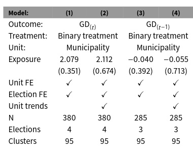

Replicação III
Exercício avaliativo
Tarefa
Neste último exercício, replicaremos o trabalho de Dinas et al. (2019) sobre a crise dos refugiados na europa e o desempenho eleitoral de partidos de extrema-direita. Explorando o fato de que algumas das 95 ilhas gregas habitáveis no mar Egeu, mais próximas da Turquia, receberam um boom de refugiados sírios pouco antes das eleições de setembro de 2015 e depois de outras realizadas em janeiro do mesmo ano, o estudo investiga o efeito desse choque sobre votos para o partido de extrema-direita Aurora Dourada (Golden Dawn). Empiricamente, o trabalho compara as votações do Autora Dourada em ilhas que receberam mais refugiados com outras que receberam menos, antes e depois da crise. Em outras palavras, a questão do artigo é: o fluxo de refugiados causou aumento na votação do partido de extrema-direita? Os resultados do paper, na Figura 1 abaixo, sugerem que sim, indicando um ATT de 2 pontos percentuais – o que o artigo interpreta como um aumento de 44% na votação do Aurora Dourada decorrente da crise dos refugiados.

Replicação
O exercício de replicação consistirá em reproduzir os resultados dos modelos 1 e 3 tabela acima (disponíveis na Tabela 1 do artigo). Para tanto, deverá ser seguido o template de replicação em Quarto (ver aqui) discutido em aula para produzir um documento final em formato PDF com cerca de 6 páginas (sem contar referências bibliográficas, tabelas e gráficos). O arquivo .qmd usado, com códigos, também deverá ser entregue.
Os dados (já limpos) necessários para o exercício podem ser obtidos no link a seguir:
A base possui as seguintes variáveis:
| Variável | Descrição |
|---|---|
year |
Ano da eleição |
municipality |
Município |
township |
Distrito |
perfecture |
Subdivisão administrativa |
treated_municipalities |
Municípios tratados |
treatment_year |
Eleição do tratamento |
gdvotes |
Votos para o partido Aurora Dourada (%) |
valid_votes |
Total de votos válidos |
syriza_votes |
Votos para o partido Syriza (%) |
pasok_votes |
Votos para o partido Pasok (%) |
turnout |
Participação eleitoral (prop.) |
Para replicar o modelo que usa a votação do Aurora Dourada defasada (i.e., \(GD_{t-1}\), conforme a notação do artigo), será necessário criar essa variável a partir da variável gdvotes.
Critérios de avaliação
A avaliação levará em conta a capacidade de implementar o conhecimento visto no curso e o esforço aplicado na tarefa – e não a obtenção de um resultado específico. Em particular, vale o esforço de tentar testar placebos, como no trabalho original, e usar diferentes estimadores de diferença-em-diferenças.